Detrás de cámara
Deslizá →
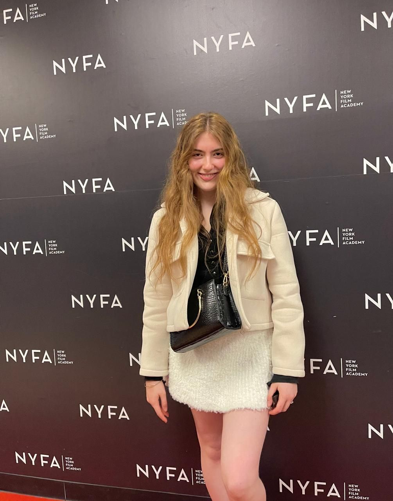
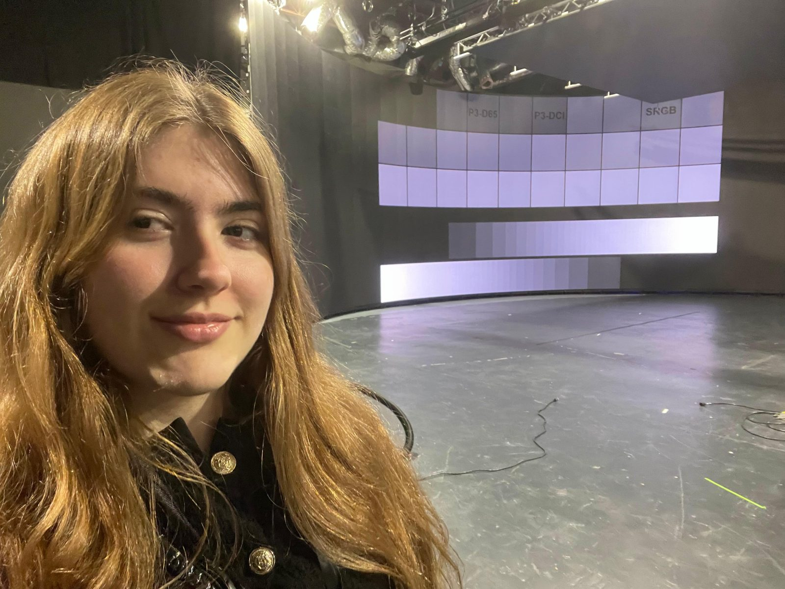

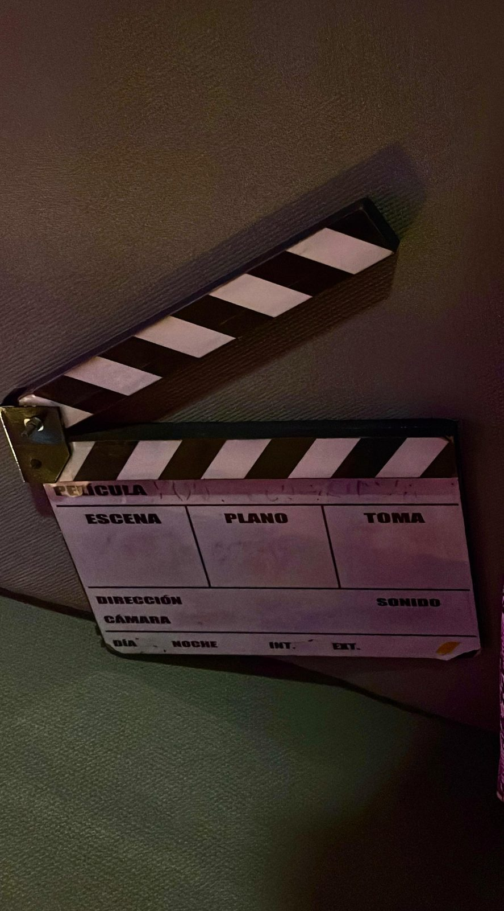
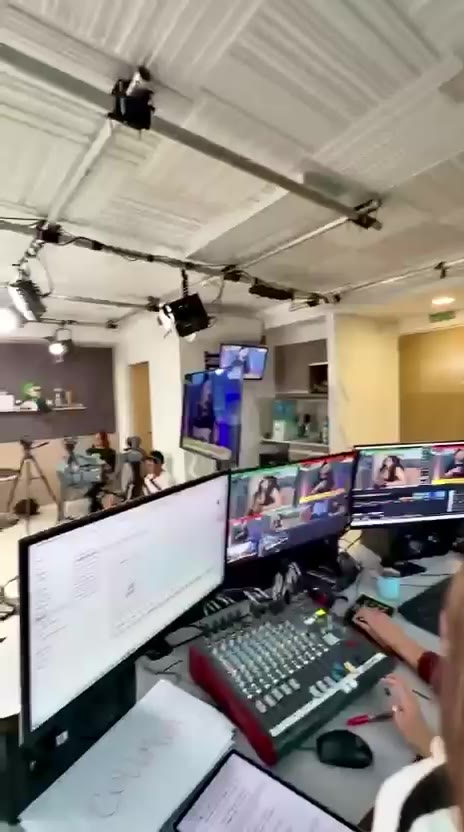
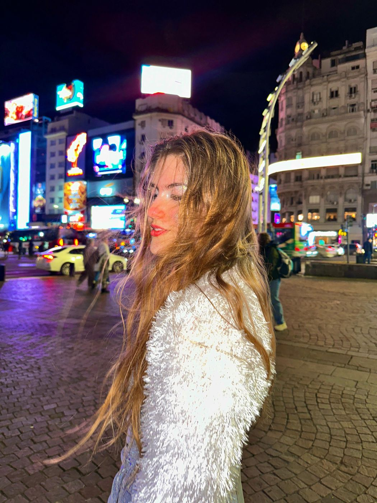
Italo-argentina con formación enfocada en lírico, pop, jazz y tango; sus creaciones musicales engloban el pop, electropop y disco, alternativo y house. Se forma de manera continua en medios, marketing, entretenimiento y arte, convencida de que con sus valores puede dejar una huella positiva en el mundo y en las personas.
Empieza a profesionalizarse artísticamente en canto, teoría musical, composición, piano, guitarra y bajo principalmente. Desde entonces se presenta en shows como solista o en grupo.
Consolida sus composiciones y estrena una de ellas por primera vez ante 1.000 personas en un festival.
Participó como conductora y cantante en un streaming que produjo en grupo.
Está preparando sus canciones para publicarlas profesionalmente y por terminar un profesorado de piano de Yamaha.
Deslizá →
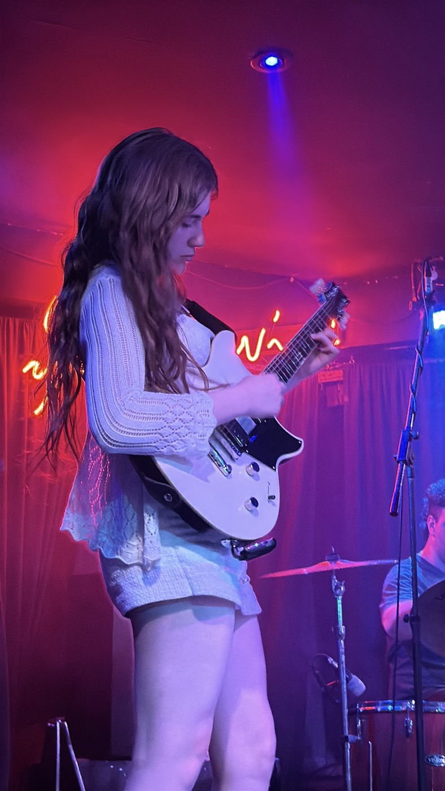
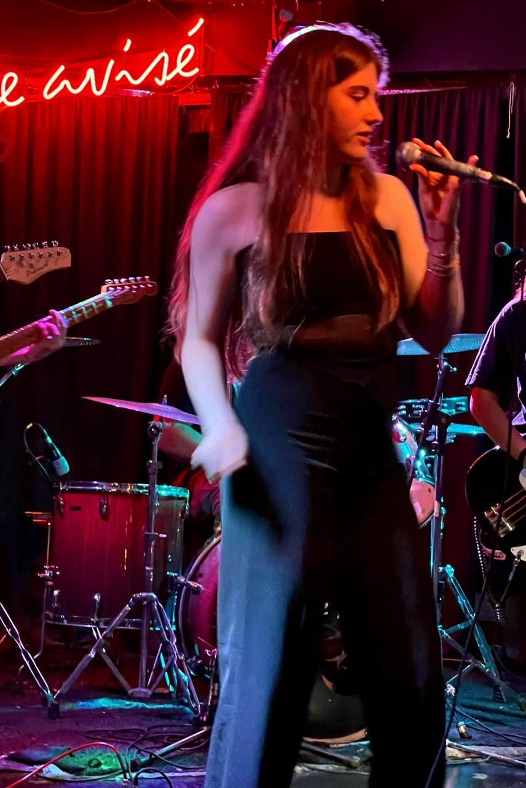
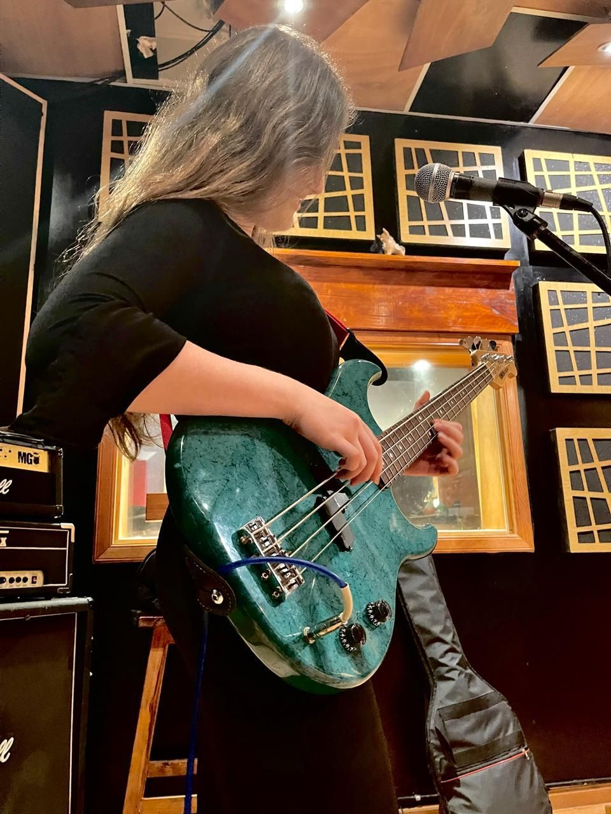
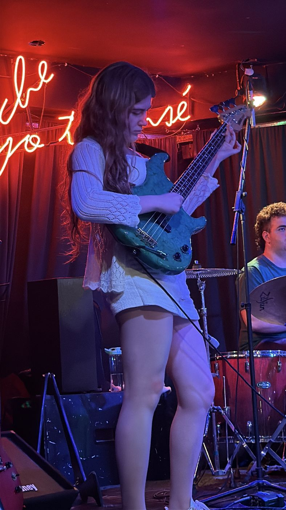
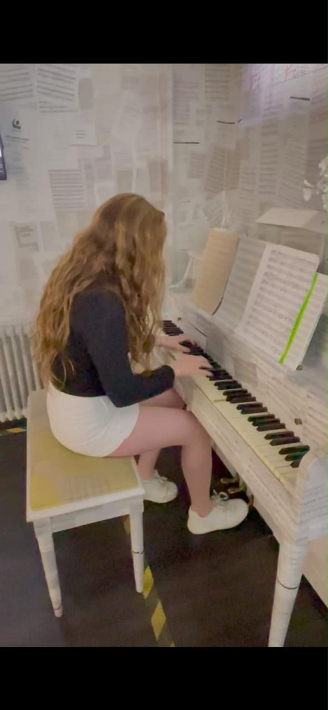
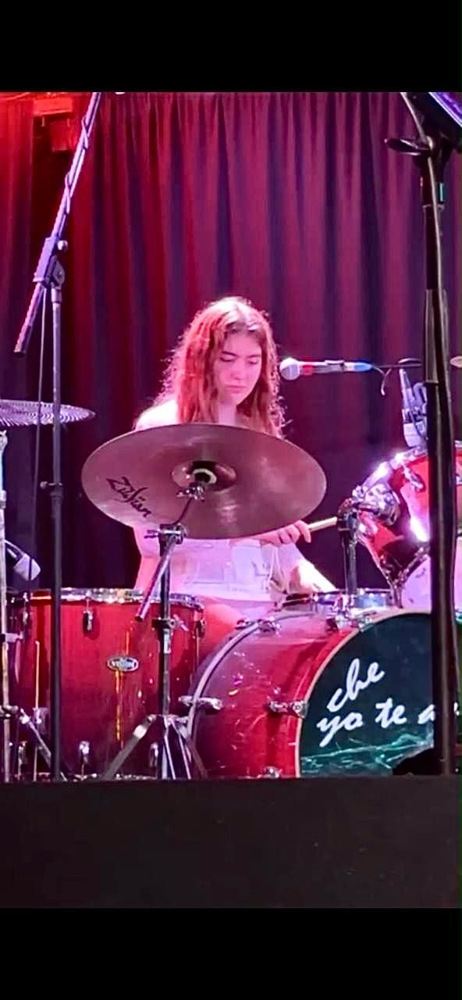
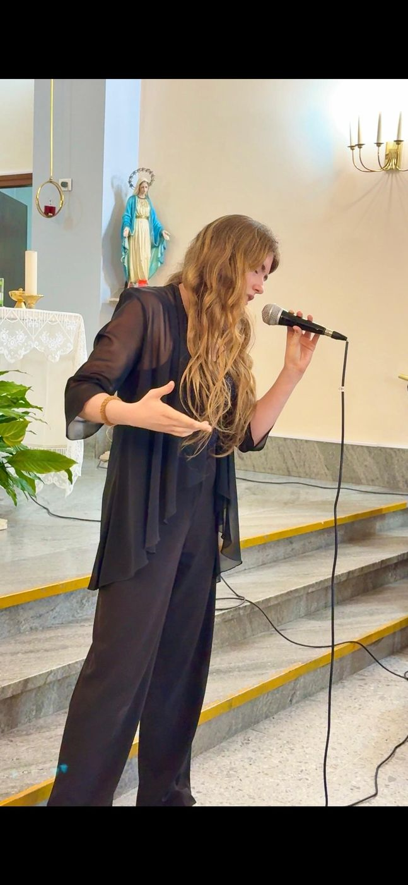
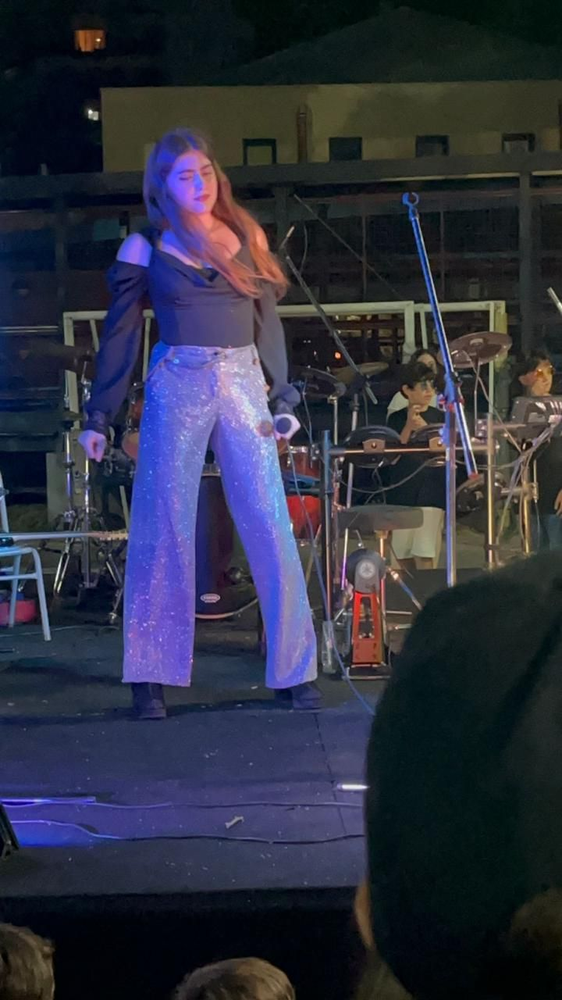
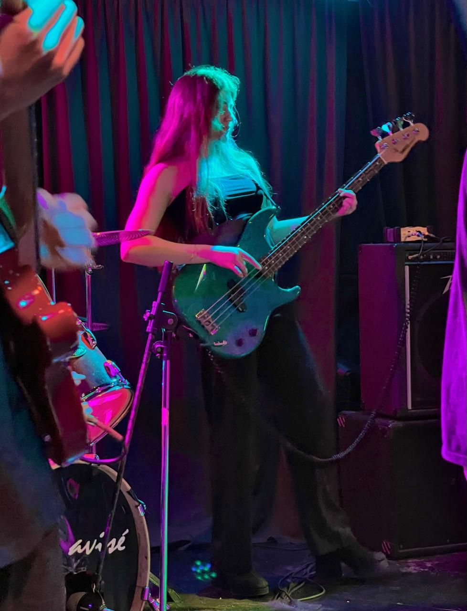
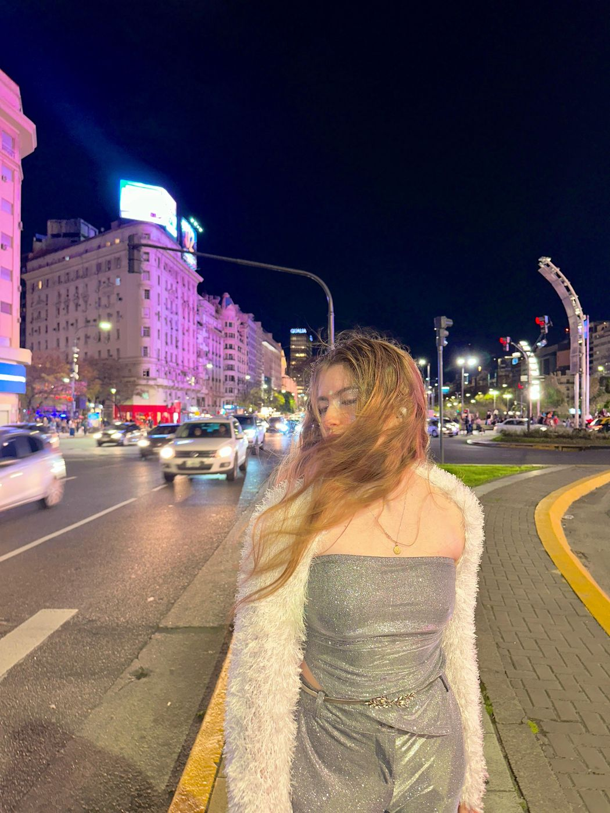
Cantautora · Compositora · Intérprete · Multiinstrumentista
Piano · Guitarra · Bajo · Ukelele
Español · Inglés · Italiano · Portugués · Francés
Presentaciones como solista o en grupo, con repertorio dependiendo de la temática.
Bodas, aniversarios, cenas y celebraciones con un repertorio a medida.
Voz acompañada por instrumentos para espacios íntimos.
Presentación, conducción y participación en streamings, podcasts, shows y eventos, en cinco idiomas.
Estudia producción en UADE desde 2025, con formación técnica y práctica. En paralelo sumó una experiencia internacional en Nueva York con diversas actividades.
Deslizá →




Planificación, administración, cronograma y coordinación el día del evento.
Orden, tiempos y etiqueta para eventos institucionales, sociales y de marca.
Producción de contenidos en vivo y grabados, de la idea a la emisión.
Concepto, estética y puesta en escena para shows y producciones.
Para shows y/o producciones, escribí directo por WhatsApp.